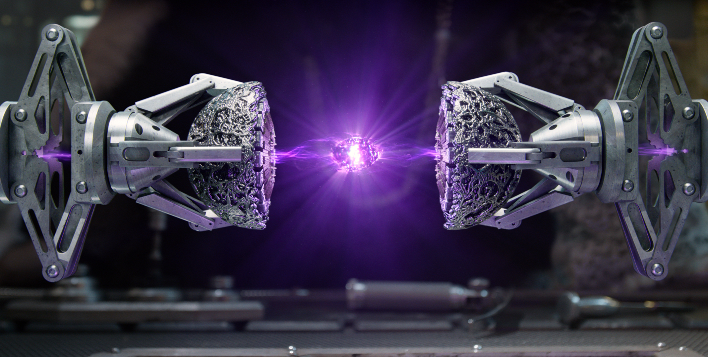

The Power Stone gives the user the ability to destroy EVERYTHING. After the creation of time a powerful being known as a Celestial was able to obtain the Power Stone. With it he decided to punish a civilization by destroying them. When he died, the Power Stone became inside the Orb. The Orb was the containment field/box for the Power Stone. Which first appeared in the Guardians of the Galaxy Vol.1. The Orb was found on the planet of Morag by Peter Quill. Then after Ronan was able to acquire the Power Stone. But instead of giving the Stone to Thanos as instructed, he decided to take the stone for himself to destroy Xandar. But thanks to the Guardians of the Galaxy the defeated Ronan with the most epic dance off in the galaxy. It was then transferred to the Xandarian safe on Xandar. But during the events of Infinty War, Thanos had acquired the Power of screen. when Thanos used the POwer Stone, he mostly used it in a combination with it and another stone. When Thanos had acquired the power he instantly knew how to use it because of the Mind Stone. He knew that the Power Stone could A. shoot powerful Power Stone shots B. could enhance any other stone's capabilities and C. has immense strength to power "The Snap" that had happened.
By Marvel Cinematic Universe Wiki CC-BY & Stone Image by Pinterest CC-BY